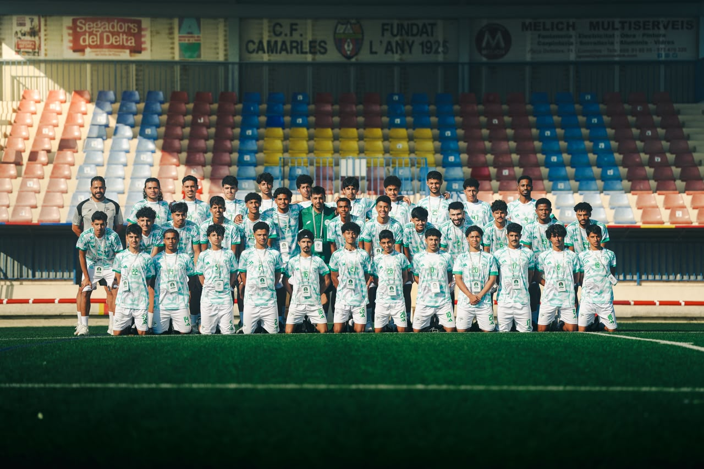
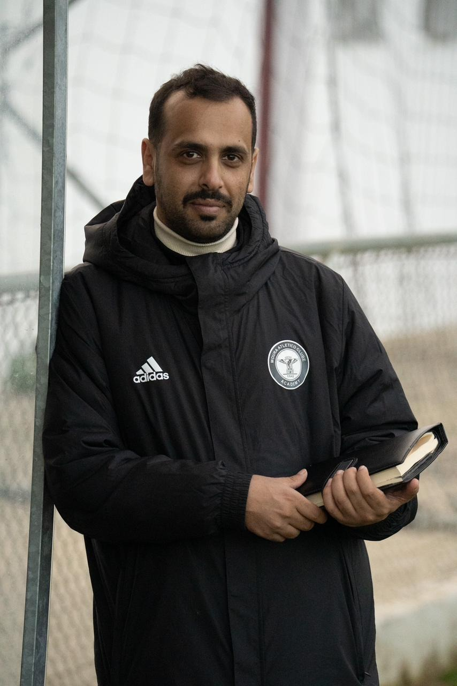

قدّم ملفك
بياناتك الأساسية، مركزك، خبراتك الرياضية، ومقاطع تظهر مستواك داخل الملعب.

من المملكة العربية السعودية · SMA PLAYERS
اكتشاف وتطوير المواهب الرياضية SMA PLAYERS
الهدف الأساسي SMA Players هو بناء جيل سعودي قادر على المنافسة محلياً ودولياً، وتوفير مسار احترافي حقيقي للاعبين الطموحين للوصول إلى أعلى المستويات.

المدرب
عمل المدرب لا يبدأ من التمرين، بل من اللاعب نفسه: كيف يتحرك، كيف يقرأ المساحة، وكيف يتصرّف عندما لا تسير المباراة لصالحه. من هذه النقطة تُبنى الجلسة.
كل برنامج يُصاغ على قياس اللاعب — مركزه، عمره، ومستوى إدراكه للعبة — مع متابعة مستمرة للأسرة والنادي حين يكون ذلك مناسبًا.
قراءة المستوى الحالي داخل الملعب، لا على الورق.
أهداف واضحة لكل مرحلة، قابلة للقياس بالأداء.
تعديل مستمر بحسب ما يظهر في التنفيذ.
SMA PLAYER · الهوية
جهة رياضية سعودية تعمل على اكتشاف المواهب وتأهيلها من خلال التدريب والمعسكرات والتجارب الكروية داخل المملكة وخارجها.
معسكرات SMA
أربع تجارب تستعرض أسلوب SMA في التدريب والمنافسة داخل المملكة وخارجها.
THE ATHLETE JOURNEY رحلة اللاعب
رحلة واضحة تُساعدنا على التعرف على موهبتك وإعدادها لفرص التدريب والاحتكاك. يبدأ كل شيء بملفك الرياضي.
بياناتك الأساسية، مركزك، خبراتك الرياضية، ومقاطع تظهر مستواك داخل الملعب.
يطلع الفريق على المعلومات والمقاطع لتحديد مدى ملاءمة اللاعب لمتطلبات البرنامج.
قد يُطلب تقييم حضوري أو اختبار فني بحسب طبيعة المعسكر والفئة المستهدفة.
يُبلغ اللاعب بالنتيجة والخطوات اللازمة في حال اختياره للبرنامج.

قصة أبطال السعودية
بدأت الحكاية بمعايشة تدريبية لسيف في البرتغال، ثم قراره تشكيل فريق سعودي للمشاركة في بطولة دولية. وبعد الإعداد في الدمام، وصل الفريق إلى لحظة التتويج.
«رفضت تدريب الفريق البرتغالي لأن هدفي كان تمثيل الوطن ورفع اسم المملكة. الرغبة في إثبات أن اللاعب السعودي قادر على المنافسة عالميًا كانت دافعًا كبيرًا.»سيف ال نمره
المنهج
الفني والبدني والذهني والسلوكي: محاور متكاملة لإعداد اللاعب.
تطوير مهارات اللاعب بأسلوب احترافي — لا بالتكرار وحده — ورفع قدرته على قراءة المواقف واتخاذ القرار داخل الملعب.
مهارة · فهم · تطبيقالعمل على الجاهزية البدنية للاعب وفق متطلبات التدريب والمنافسة؛ من التقييم والإعداد إلى الاستعداد لخوض مباريات المعسكر.
إعداد · لياقة · جاهزيةبناء شخصية اللاعب وتعزيز ثقته بنفسه وتركيزه داخل الملعب وخارجه، ليكون أقدر على التعامل مع ضغوط المنافسة.
ثقة · تركيز · شخصيةغرس الانضباط والاحترام وروح الفريق والسلوك الإيجابي، بوصفها جزءًا أصيلًا من تقييم اللاعب لا إضافةً عليه.
انضباط · احترام · فريقاللاعبون والإنجازات
من مكتبة صور SMA
من التدريبات والمنافسات إلى لحظات التتويج.